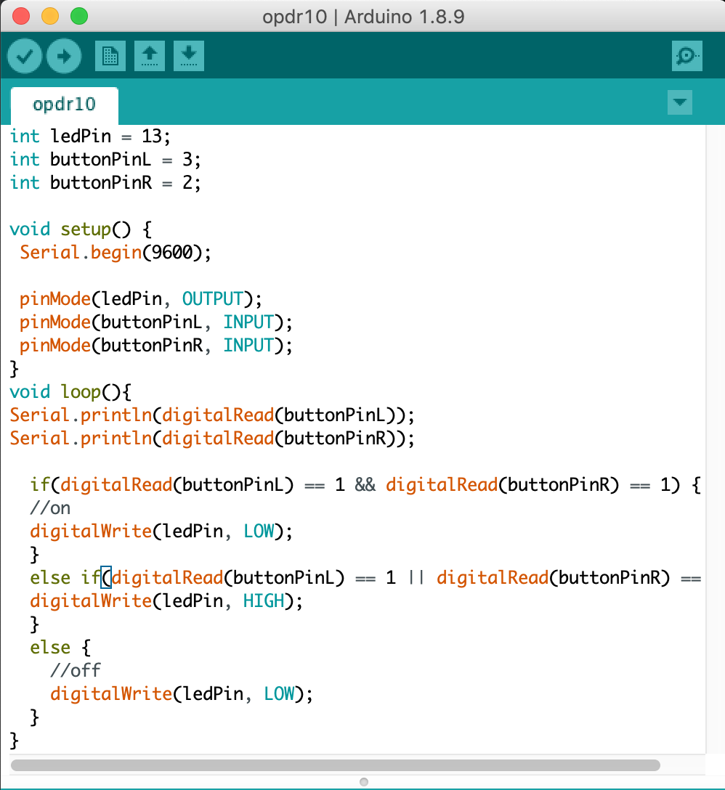
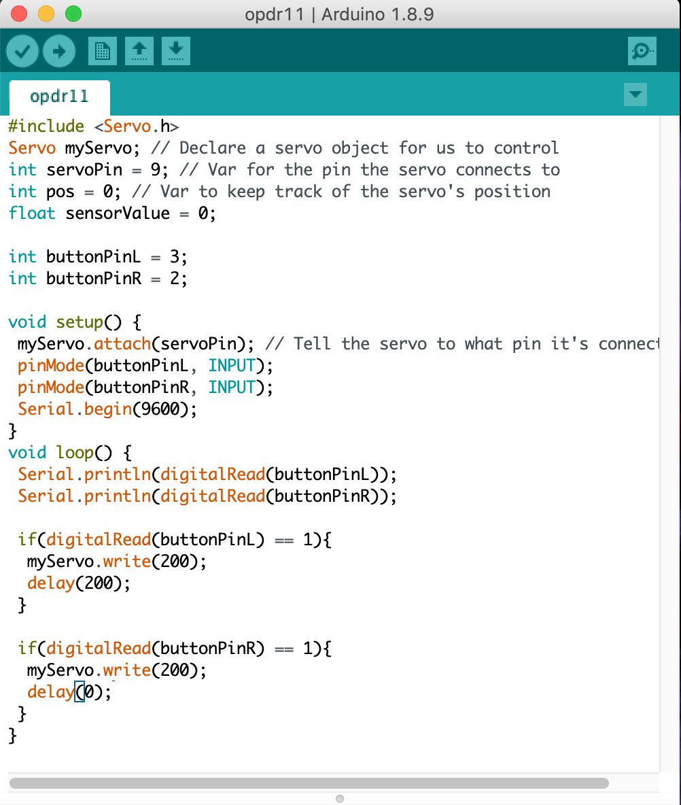
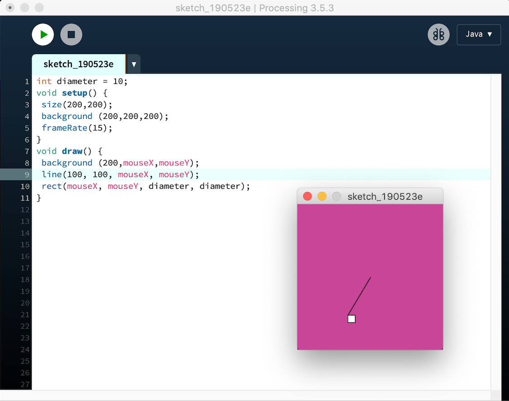

Ik ben Larissa Hoogervorst!
Ik ben 20 jaar. Ik ben een tweedejaars student Communication
& Multimedia Design aan de Haagse Hogeschool.
Verwachtingen
Ik verwacht dat dit een zwaar vak gaat zijn omdat er meerdere
onderwerpen aan bod komen maar ik ben wel heel erg benieuwd
naar de opdrachten die we moeten maken. Ik denk dat
ik tijdens dit vak nog veel kan leren en nieuwe dingen
ga ontdekken.
Lecture Assignments
Topic: Wearable Technology
Assignment
Voor dit assignment heb een concept bedacht voor case 1: smart tattoos as a new way of communicating.
Vaak genoeg kom je op straat of andere plekken mensen tegen, zijn dit nou vreemden of bekenden, met tattoos.
Vaak vraag je je af wat een tattoo moet voorstellen of welke betekenis dit heeft. Deze smart tattoo ziet eruit als een hele gewone tattoo maar door deze te scannen met behulp van een bepaalde sensor die hieraan gekoppeld is kan je meer informatie krijgen over deze tattoos.
Deze informatie is dan te verkrijgen op een smartphone of smartwatch. De eigenaar van de tattoos kan zelf de informatie vrijgeven en aanpassen etc. De eigenaar kan ook bepaalde tattoos niet vrijgeven voor informatie. Met behulp van deze informatie kan je een gesprek opstarten hierover wat dus de communicatie tussen gebruikers bevorderd.
Research
Voor dit topic heb ik research gedaan naar wearables en ben ik dit leuke spotje van de ABN AMRO tegengekomen. Een hond die kan betalen met zijn horloge. Dit is gemakkelijk te doen door een NFC sensor toe te voegen aan het horloge. Hiermee kan je dus contactloos betalen bij het pinapparaat.
Het filmpje is hieronder te bekijken.
Reflect
Voor dit topic vond ik het heel leuk om een concept te bedenken. Ik had het concept van smart tattoos heel letterlijk genomen maar ik vond dit wel een leuk idee om 2 wearables te combineren.
Topic: Playful Interfaces
Assignment Make Me Happy Stairs
Om positief gedrag te bevorden heb ik het concept 'Make Me Happy Stairs' bedacht. Dit lijkt een beetje op de bekende 'piano stairs'. Het doel van dit concept is om goed gedrag, namelijk traplopen in plaats van simpelweg de lift te nemen te bevorderen.
Om de trap aantrekkelijker te maken zijn er verdrietige smiley's afgebeeld op de traptredes. Door trap te lopen veranderd het verdrietige gezichtje in een vrolijk gezichtje als er op de traptredes gestaan wordt.
Het concept is eigenlijk gewoon single player maar kan ook als multiplayer gezien worden als er meerdere mensen tegelijkertijd traplopen.
Research
Voor dit assignment heb ik research gedaan naar voorbeelden van playful interaction. Hierbij heb ik een leuk voorbeeld gevonden namelijk:
Storytelling wordt interessant gemaakt door playful interaction. Illustraties komen tot leven wanneer deze bijvoorbeeld aangeraakt worden. Deze lichten op en maken het een opvallend beeld. In totaal zijn er 48 interacties en meer dan 100 unieke animaties.
De input technology staat niet beschreven, maar omdat je dingen aan moet raken zal er bijvoorbeeld iets van een pressure of capacitive sensor in zitten om dit te kunnen laten werken.
Bij de output technology kan je denken aan sight (projection, light en movement), touch (movement en vibration) en hearing (sound).
Dit storyboard kan je alleen of samen met anderen ‘spelen’. Stel je doet het met iemand samen is er geen competitie in het spel en werk je cooperatief en knowing parallel.
Reflect
Terug reflecterend naar dit topic vond ik dit een van de leukste topics. Misschien omdat dit topic vergeleken met de andere topics iets simpeler is en ik dit beter kan volgen dan de hele technische topics.
Topic: Artificial Creatures
Assignment
Voor de research van dit topic heb ik ervoor gekozen om het Homeostasis model toe te passen op een deur die automatisch open en dicht gaat.
Het homeostasis model werkt door het identificeren van de ‘needs’ van een installatie.
De primaire functie van deze deur is open gaan wanneer er iemand voor staat en dicht gaan als er niemand meer staat.
De meeste automatische deuren gebruiken motion detection sensors of optical sensors, die aan de zijkanten van de deur gemonteerd zijn. Deze sensoren detecteren beweging voor de deur waardoor deze open gaan.
Wat kan er mis gaan? Deze sensoren detecteren beweging, als er dus iemand stil staat of als mensen heel langzaam lopen kan het zijn dat de deuren niet open gaan.
Stel de deur heeft emoties, hij zal dan blij zijn als hij iemand detecteert en de deur open gaat en verdrietig zijn als hij iemand niet detecteert en de deur dus niet open gaat.
Door de deur verschillende emoties te geven krijgt deze ook een persoonlijkheid. De deur wilt blij zijn dus hij wilt dat elke keer als een persoon voor de deur staat deze goed open gaat zodat de deur blij wordt.
Elke keer dat het niet goed gaat omdat bijvoorbeeld stil staat voor de deur en de deur niet door heeft dat hij open moet gaan is de deur verdrietig en dat willen we niet.
De emoties die de deur dan toont zorgt ervoor dat hij zich gedraagt als een wezen.
Reflect
Het topic 'Artificial Creatures' vind ik een heel interessant onderwerp. De opdracht gaf een heel nieuw perspectief op die onderwerp wat ik leuk vond.
Dit lijkt me ook een leuk onderwerp om mee verder te gaan in de labweken die bijna volgen.
Topic: Virtual & Augmented Reality
Assignment
Voor 3 verschillende onderwerpen heb ik AR of VR concepten bedacht.
AR concept 1 (therapy)
Tegenwoordig is er een groot tekort aan psychologen en therapeuten. Met mijn concept 'AR Therapy' kan dit worden opgelost.
Door middel van je smartphone kan je een app openen met jouw eigen AR therapeut! Deze therapeut kan je op elk moment van de dag helpen. Ook kan deze AR therapeut derden inschakelen in geval van nood!
VR concept 2 (art/museum)
Voor veel beginnende artiesten is het lastig om een start te maken. Met de VR Expo kunnen kleine artiesten een expositie opzetten van hun werk en deze uploaden tot een app die deze 'ophangt' in de VR Expo. Deze Expo is over de hele wereld te zien, omdat dit een kleine moeite is om het online te bekijken vs naar een lokale expositie gaan komen artiesten beter van de grond.
AR concept 3 (traffic)
De reddende engel voor het verkeer. Deze AR buddy is jouw persoonlijke navigatie en verkeershulp in 1. Dit dashboard hulpje waarschuwt voor gevaarlijke situaties, file en wijst je de weg! Hij maakt het ook een stuk gezelliger in de auto dan de saaie navigatie stem. Je buddy kan je zelf personaliseren.
Research
In dit museum kunnen gebruikers een AR ervaring beleven. Het AR systeem installeert een
aanpasbare en interactieve 3D werkelijkheid op elk scherm.
Volgens de omschrijving op YouTube:
“The system displays interactive cinema quality 3D, alpha channel video in both pre-rendered "canned" animation scenes or live rendered "live" output to generate gamified experiences.”
Het systeem is zo aanpasbaar dat de installatie te gebruiken is voor evenementen in openbare ruimtes en musea voor educatieve redenen.
Ik heb dit filmpje gekozen omdat ik het heel leuk vind om te zien hoe de gebruikers, en in dit geval veel jonge kinderen, omgaan met de installatie. Je ziet hoe ze proberen contact te maken met de dinosaurussen etc.
De makers zijn INDE. Hieronder is een filmpje te zien van de installatie.
Reflect
Terug reflecterend naar dit topic vond ik het een leuk en ook heel breed onderwerp omdat VR en AR toch weer heel anders zijn. Toch ben ik er wel achter gekomen dat ik AR veel leuker vind omdat ik hier veel leuke ideetjes voor heb gekregen in tegenstelling tot VR.
Workshops
Arduino
Opdracht 3c
De opdracht is: laat het groene LED lampje 2 keer zo snel knipperen als het gele LED lampje.
Opdracht 4c
De opdracht is: laat 1 LED lampje 'fade out' terwijl het andere LED lampje 'fades in'.
Opdracht 6c
De opdracht is: laat 1 LED lampje 'fade out' terwijl het andere LED lampje 'fades in' om en om als je aan de potmeter draait.
Opdracht 7
De opdracht is: zorg ervoor dat het lampje meer of minder wordt aan de hand van de hoeveelheid licht het LDR opvangt.
Opdracht 8
Van de twee LDR's (Light Dependent Resistor) is er een donker gemaakt en een licht. Wanneer je er een bedekt schieten de nummers omhoog of omlaag, dit ligt eraan welke je bedekt. Als je beide wel of niet bedekt zullen de nummers in het midden blijven.
Opdracht 9b
De opdracht is: met Arduino en Processing iets laten bewegen aan de hand van de hoeveelheid licht de LDR (Light Dependent Resistor) ontvangt.
Opdracht 10f
De opdracht is: het LED lampje gaat aan wanneer ene van de knopjes wordt ingedrukt, maar niet wanneer ze allebei worden ingedrukt.

Opdracht 11b
De opdracht is: laat de servo motor bewegen op een leuke manier.

Opdracht 12b
De opdracht is: laat de servo motor bewegen door de knopjes in te drukken maar mag niet buiten het 0 - 160 bereik.
Opdracht 13b
De opdracht is: laat de Arduino een creatief deuntje afspelen.
VR Environments
Unreal Engine is een ontwikkelomgeving waarin je virtuele werelden kunt creëren. Dit programma heb ik gebruikt om de volgende opdrachten te maken.
Unreal Engine
In het bovenstaande filmpje is te zien hoe een banaan ronddraait op een platform.
In het bovenstaande filmpje is te zien hoe meerdere bananen ronddraaien, er is een kubus waarmee je alle bananen kan weghalen.
Spatial Augmented Reality
In het bovenstaande filmpje is te zien hoe ik een wereldbol, de zon en de galaxy heb afgebeeld op bepaalde voorwerpen, met behulp van MadMapper en een beamer heb ik dit zo interactief kunnen maken dat deze reageert op geluid zoals hier te zien is.
In het bovenstaande filmpje is te zien hoe ik een wereldbol, de zon en de galaxy heb afgebeeld op bepaalde voorwerpen, met behulp van MadMapper en een beamer heb ik dit zo interactief kunnen maken dat deze aan en uit kunnen door de 'Q' in gedrukt te houden en weer los te laten.
Computer Vision
Assignment 1
In de onderstaande afbeelding zijn 3 verschillende ellipses in verschillende kleuren, formaten en locaties te zien met de daarbij horende code.
Assignment 2
In de onderstaande afbeelding zijn 4 verschillende vormen te zien in verschillende kleuren en geplaatst op verschillende locaties met de daarbij horende code.
Assignment 3
In de onderstaande afbeeldingen is een vorm te zien die ik interactief had gemaakt. Door de cursor kan je het witte vierkantje verplaatsen en hierdoor veranderd de achtergrond kleur mee. De bijbehorende code staat erbij.

Assignments
Door een afbeelding te scannen komt er een figuur te voorschijn.
De opdracht uit de twee laatste afbeeldingen wilde mijn webcam niet pakken dus deze heb ik samen met Lieke Driesse uitgevoerd.
Excursion
Excursie naar NEMO
Met de excursie zijn wij naar het NEMO Science Museum in Amsterdam geweest. Hier heb ik een installatie uitgekozen die mij technisch het meeste aansprak.
Op de foto hieronder is deze installatie dan ook te zien.
Het doel van deze installatie:
Er liggen bakken met verschillende gekleurde borden. Kinderen kunnen deze pakken. Op de muur is door middel van een beamer een wereldbol afgebeeld. Er worden verschillende elementen zoals meteorieten en kometen afgevuurd op de aarde. Als je voor het scherm staat kan je door middel van de gekleurde borden deze meteorieten afweren zodat deze niet de aarde verwoesten. Door het bord heen en weer te bewegen kan je je verplaatsen over de rand van de aarde.
Ik weet niet alle technologie erachter maar ik ga ervan uit dat er bepaalde sensoren in zitten die detecteren waar het bord zich plaats vind zodat deze op de goede plek op het scherm wordt afgebeeld.
Waarom deze installatie?
De reden dat ik deze installatie interessant vond is omdat er veel gebruik van werd gemaakt door de kinderen die aanwezig waren in NEMO, het een eigenlijk vrij simpel spel is en omdat wij een soort gelijk spel hebben gespeeld in een hoorcollege (hierbij was het meer een soort pong maar wel met soortgelijke borden etc.).
Foto bij de installatie:
Hieronder is nog een video te zien van de installatie:
Reflect
Nu ik terugkijk naar de excursie vond ik het heel leuk om te zien hoe deze installaties daadwerkelijk gebruikt worden vooral door kinderen en hoe zij hier mee aan t werk gaan. Het is interessant om erover na te denken hoe de installaties in elkaar zitten en welke sensoren etc hiervoor nodig zijn omdat te kunnen laten werken.
Lab Weeks
Tot slot zijn we aangekomen bij de 'lab weeks'. Twee weken lang werken wij aan een project in de Maakhaven in Den Haag. Het onderwerp dat ik met mijn groepje heb gekregen is 'Artficial Creatures'.
Proces
Gedurende de labweken heb ik elke dag bijgehouden wat wij hebben gedaan. Een soort logboek. Deze is hieronder te vinden.
Dag 1 - Maandag
De allereerst dag van de labweeks. Op deze dag kregen wij de groepjes en onderwerpen te horen. Mijn groepje bestaat uit Hernan, Patrick, Wendy, Julie en ik zelf. Na het voorstellen zijn wij eigenlijk gelijk al gaan brainstormen. Wat komt er bij ons op als we denken aan dit onderwerp? Wat willen we maken? Wat kunnen we maken? Op deze manier zijn wij op een aantal ideeen en concepten gekomen om uit te schrijven/tekenen. Hieruit hebben wij 1 concept gekozen waarmee wij verder wilde gaan. Hierbij hebben wij gekeken naar alle mogelijkheden voor dit concept. Wat willen wij dit 'Artificial Creature' laten doen? Hiervoor hebben wij gelijk een lijstje met materialen opgesteld en deze besteld zodat we zo snel mogelijk aan de slag konden. Het concept die wij willen waarmaken is een soort 'Piranha Plant' uit de Mario spelletjes.
Eigen bijdrage
Mijn eigen bijdrage aan de eerste dag is het goed meedenken tijdens het brainstormen en proberen een concreet concept op te zetten. Ook heb ik veel toegevoegd aan de materialen lijst en hier een deel van besteld.
Dag 2 - Dinsdag
Op de tweede dag zijn wij begonnen met het programmeren van de webcam die wij willen gebruiken. Hierbij moet deze geprogrammeerd worden om een persoon die voor de webcam komt te staan daadwerkelijk te volgen. Het idee is dan dat de webcam ergens op het hoofd van de plant gemonteerd wordt zodat het hoofd dan iemand kan volgen.
Eigen bijdrage
Mijn eigen bijdrage deze dag is het helpen testen van de webcam. Ik ben begonnen met een paar schetjes te maken om een beter beeld te krijgen van het concept. Ik heb meer onderzoek gedaan naar de technische mogelijkheden en wat we eventueel zouden willen toevoegen aan de plant.
Dag 3 - Woensdag
Op dag 3 kregen wij materiaal binnen voor de LED matrix, dus waren we begonnen met de research voor de matrix. Hoe kunnen we van de matrix ogen creeren voor de plant? Daarnaast hebben we ook meer schetsen etc gemaakt om een duidelijker beeld te krijgen van wat we precies willen maken.
Verder hebben we nog vooruitgang gemaakt met de webcam en zijn we dichterbij het punt dat deze werkt.
Eigen bijdrage
Voor mij bestond deze dag uit veel research naar de LED matrix die wij hadden besteld. Omdat dit een wat grotere matrix is was deze moeilijker te programmeren en hiervoor hebben wij dus veel research moeten doen. Ook heb ik weer schetsen gemaakt voor aparte onderdelen van het project en meer gedetaileerde versies.
Dag 4 - Donderdag
Op dag 4 hadden we toch eindelijk de doorbraak met de webcam. We hebben het voor elkaar gekregen dat de webcam een persoon volgt als deze langzaam beweegt. De webcam is voor nu nog gemonteerd op een servo motor zodat beweging mogelijk is.
Verder hebben we een materialenlijst gemaakt voor de pot van de plant. Deze hebben we dan ook gelijk gehaald zodat we de volgende dag er gelijk mee aan de slag konden gaan.
Eigen bijdrage
Ik heb samen met Wendy de benodigde materialen gehaald voor het maken van de plantenpot. Hierna heb ik een beetje een planning gemaakt hoe we dit het beste konden aanpakken.
Deze dag heb ik een aantal keer geholpen met het testen van de webcam en dit ook tijdens het presenteren van onze doorbraak.
Dag 5 - Vrijdag
Op dag 5 waren wij begonnen met het maken van de pot van de plant, dit moest voor het weekend gebeuren zodat de klei die wij gebruiken 3 hele dagen had om op te drogen. De vorm van kippengaas met daaroverheen klei vormt de basisvorm van de pot. Halverwege hadden wij nog extra materiaal moeten halen.
Daarnaast zijn we verder gegaan met het verbeteren van de webcam bewegingen.
Eigen bijdrage
Ik heb vrijwel de hele dag samen met Wendy gewerkt aan de plantenpot. Wij hebben samen gezorgd voor deze materialen en vonden het een goed idee om dit dan ook samen af te maken. Gelukkig hadden we dit op tijd af en kon de pot lang drogen.
Dag 6 - Dinsdag
Na een lang weekend kwamen wij weer terug naar Maakhaven om ons project verder te gaan met ons project. De pot is gedroogd en klaar om verder aan gewerkt te worden. Wij hebben de taken een beetje verdeeld, Hernan en Patrick zijn vooral bezig met het programmeren van de webcam en LED matrix en Wendy en ik zijn vooral gefocust op het fysieke project zelf. Omdat de klei nog niet genoeg was hebben wij ervoor gekozen om deze aan te sterken met gips. Dit gaf ook een mooier uiterlijk aan de pot. Het begint echt al ergens op te lijken.
Eigen bijdrage
Samen met Wendy zijn wij verder aan de slag gegaan met het maken van de plantenpot. Ik heb veel tijd gestoken in alle elementen passend te maken.
Dag 7 - Woensdag
Deze dag konden wij eindelijk beginnen met het verven van de pot nu deze helemaal af en opgedroogd was. Deze hebben wij groen gemaakt om de tube uit de mario spellen een beetje na te bootsen. Ook konden de stengel en de bak voor de aarde in/op de pot monteren en deze hierna ook verven. Ook zijn we verder gegaan met de ogen op de LED matrix.
Eigen bijdrage
Ik ben deze dag vooral creatief bezig geweest met het verven van de stukken. Ik wilde graag dat deze er zo mooi mogelijk uit zou komen te zien en een beetje op de plant uit de mario spelletjes zou lijken.
Dag 8 - Donderdag
Deze laatste dag was redelijk hectisch omdat we nog niet alles afhadden en niet alles konden testen hierdoor. Het hoofd moest nog helemaal gemaakt worden, we hebben op nog van alles een extra laag overheen moeten verven. We moesten ervoor zorgen dat alles goed in en op elkaar past zodat het stabiel zou blijven. De webcam en LED matrix waren af en hoefde alleen nog gemonteerd te worden op het hoofd en de stengel etc. Dit konden wij alleen nog niet doen omdat het hoofd dus nog niet af was. Wel heeft hij een naam gekregen: NomNom.
Eigen bijdrage
Mijn bijdrage aan deze dag is dat ik nog veel dingetjes heb moeten afmaken. Het hoofd heb ik nog buiten de schooluren helemaal moet maken omdat we hier geen tijd en materiaal meer voor hadden. Dit heeft mij toen nog een aantal uur extra gekost maar gelukkig zorgde dit er wel voor dat we dit niet nog op de laatste dag er nog bij moesten doen.
Dag 9 - Vrijdag
De laatste dag van de labweeks. We hadden op deze dag tot 12 uur de tijd om alle puntjes op de i te zetten en het project af te maken. Deze dag hadden wij een aantal terugslagen omdat het hoofd iets te zwaar was om rechtop te blijven staan, dit hadden wij opgelost door een draadje over een balk te spannen zodat het hoofd rechtop bleef staan. Daarnaast wilde het niet lukken om de langere draden te gebruiken dus hebben wij de laptop met de arduino dichterbij moeten plaatsen. Om 4 uur was de expositie, hierbij kwamen mensen langs om ons project uit te proberen, wij kregen vooral positieve feedback. Soms raakte de webcam een persoon kwijt als deze te snel uit het beeld raakte.
Eigen bijdrage
Deze laatste dag heb ik ervoor gezorgd dat het hoofd dat ik had gemaakt op de plant zou komen. Verder heb ik geholpen met de bedrading goed leggen en heb ik ook geholpen met het stabiliseren van de gehele plant.
Product
Wat is het en hoe staat dit verbonden met het onderwerp?
Het onderwerp waar wij dit project voor hebben gemaakt is 'Artificial Creatures'. Hierbij wilden we dus een 'levend' wezen maken. Na heel wat brainstorm sessies kregen wij het idee van een vleesetende plant oftewel de 'piranha plant' uit de Mario spelletjes. Ons idee was dus om deze daadwerkelijk tot leven te brengen. De plant kan contact maken met een persoon door deze via een webcam te volgen, vervolgens kan je hem ook als een recyclebak zien.
De naam van ons project is: NomNom.
Hoe werkt het?
NomNom detecteerd een persoon als deze voor hem komt te staan via de webcam. Als de persoon dan beweegt kan NomNom diegene volgen. Zo maakt hij contact met iemand. NomNom houd ook van recyclen. Vooral flessendopjes en blikjesopeners. Door deze in NomNom's mond te gooien kan je deze recyclen. Deze materialen worden dan afgevoerd door de stengel in en bak in de plantenbak waar deze dus ook weer geleegd kan worden.
Illustraties
Aftermovie
Reflectie
Na 2 lange weken hebben we de labweeks afgerond. Het was erg hard werken maar wel heel leuk en interessant om te doen. Het was leuk om een keer samen met de internationale studenten te werken omdat je wel merkt dat zij dingen toch weer anders doen en anders denken. De samenwerking met mijn groepje liep vrijwel heel soepel. Bijna iedereen heeft erg zijn best gedaan en goed meegewerkt.
Iets waar wij allen wel van kunnen leren is dat wij eerder moeten gaan testen. Nu was dat ook wel onze bedoeling maar was dit niet mogelijk omdat niet alle onderdelen al helemaal af waren. In het vervolg zouden we ervoor moeten zorgen dat deze onderdelen wel al af zijn zodat we dus genoeg tijd hebben om te testen en aanpassingen te maken. Doordat we nu geen tijd over hadden hebben wij de LED Matrix weg moeten laten van het uiteindeljike product. Dit is heel jammer maar was noodzakelijk zodat we wel de webcam om de servo motors konden laten werken.